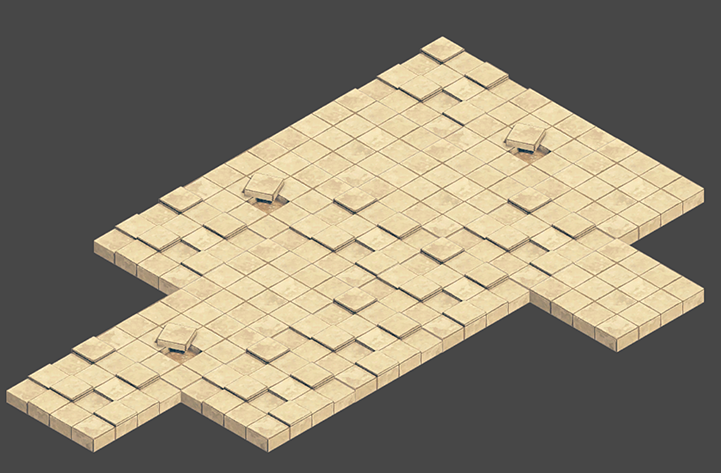

Tilemap Renderer Modes
The Tilemap Renderer component renders the TilemapA GameObject that allows you to quickly create 2D levels using tiles and a grid overlay. More info
See in Glossary in the SceneA Scene contains the environments and menus of your game. Think of each unique Scene file as a unique level. In each Scene, you place your environments, obstacles, and decorations, essentially designing and building your game in pieces. More info
See in Glossary. Unity creates Tilemaps with the Tilemap Renderer attached by default. The Tilemap Renderer can:
The Render Mode affects how the Tilemap SpritesA 2D graphic objects. If you are used to working in 3D, Sprites are essentially just standard textures but there are special techniques for combining and managing sprite textures for efficiency and convenience during development. More info
See in Glossary are sorted when rendered.
Rendering in batches with Chunk Mode
Chunk Mode is the default rendering mode of the Tilemap Renderer:

When set to Chunk Mode, the Tilemap Renderer handles Sprites on a Tilemap in batches and renders them together. They are treated as a single sort item when sorted in the 2D Transparent Queue. This reduces the number of draw calls to improve overall performance, however other Renderers cannot be rendered in between any portion of the Tilemap which prevents other rendered Sprites being able to interweave with the Tilemap Sprites.
Using the Sprite Atlas for Sorting (Chunk Mode only)
In Chunk Mode, the Tilemap Renderer is not able to sort Tiles from multiple textures individually and does not render the Tile Sprites consistently (see example below).
Pack all the individual Sprites that make up the Tilemap into a single Sprite Atlas to solve this issue. To do this:
Create a Sprite AtlasA texture that is composed of several smaller textures. Also referred to as a texture atlas, image sprite, sprite sheet or packed texture. More info
See in Glossary from the Assets menu (go to: Atlas > Create > Sprite Atlas).Add the Sprites to the Sprite Atlas by dragging them to the Objects for Packing list in the Atlas’ InspectorA Unity window that displays information about the currently selected GameObject, asset or project settings, alowing you to inspect and edit the values. More info
See in Glossary window.
Click Pack Preview. Unity packs the Sprites into the Sprite Atlas during Play mode, and correctly sorts and renders them. This is only visible in the Editor during Play mode. 
Rendering individually with Individual Mode

In Individual Mode, the Tilemap Renderer sorts and renders the Sprites on a Tilemap with consideration of other Renderers in the Scene, such as the Sprite RenderersA component that lets you display images as Sprites for use in both 2D and 3D scenes. More info
See in Glossary and Mesh RenderersA mesh component that takes the geometry from the Mesh Filter and renders it at the position defined by the object’s Transform component. More info
See in Glossary. Use this mode if other Renderers interact with Sprites and objects on the Tilemap.
In this mode, the Tilemap Renderer sorts Sprites based on their position on the Tilemap and the sorting properties set in the Tilemap Renderer. For example, this allows a character Sprite to go in-between obstacle Sprites (see example below).
Using the same example in Chunk Mode, character Sprites may get hidden behind ground sprites:

Using Individual Mode may reduce performance as there is more overhead when renderingThe process of drawing graphics to the screen (or to a render texture). By default, the main camera in Unity renders its view to the screen. More info
See in Glossary each Sprite individually on the Tilemap.
Custom Axis Sorting Mode for a Z as Y Tilemap in Individual Mode
To correctly sort and render Tile Sprites on an Isometric Z as Y Tilemap, the Transparency Sort Axis must be set to a Custom Axis. First set the Renderer Mode to ‘Individual Mode’ and go to to Edit > Settings > Graphics.
Set Transparency Sort Mode to Custom Axis, and set its Y-value to –0.26. Refer to the page on Creating an Isometric Tilemap for more information about the Transparency Sort Axis settings.
- Isometric Tilemaps added in 2018.3 NewIn20183